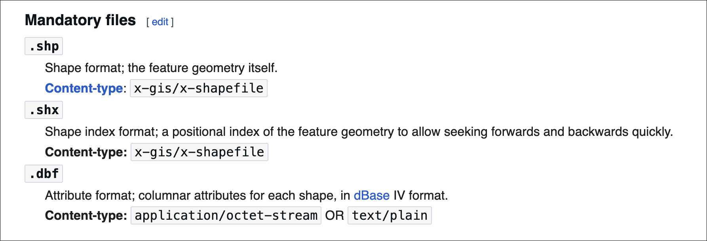
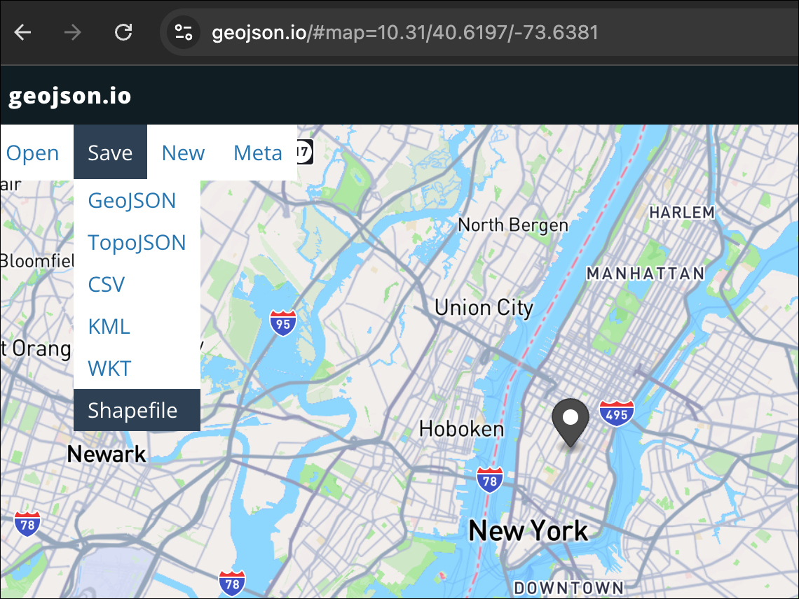
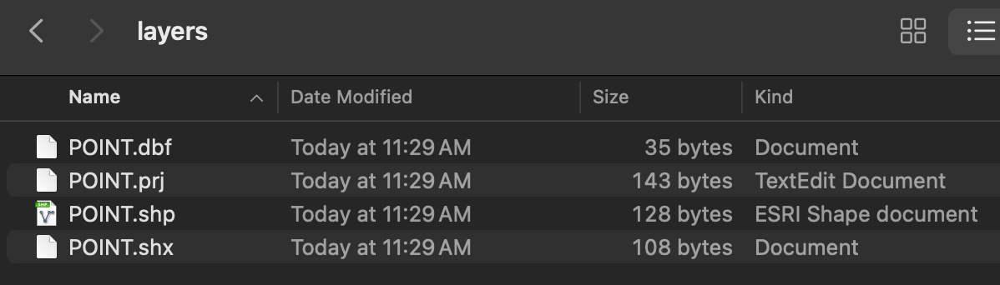

Spatial Thinking with GIS: Week 2 Class 2 Demonstration Lab
Spring 2026 | UENV 3200 - CRN 11009 + UURB 3210 - CRN 111008
Preamble
In this Week 2 Class 2 Demonstration Lab, we will create a ‘small scale’ world map featuring populated places. As we work through the lab, we will first import data; learn core components of the QGIS interface, finishing with a final PDF cartographic output that we tailor for best map legibility.
Data

The directory reads as c1.natural.earth.data; that is fine even as this is technically the second class, c2.
Part I
- In order to access and display spatial data within QGIS, the data must first be uncompressed and connected. The following video guide covers the ways that data can be connected to QGIS with an emphasis on establishing a good directory file path and project folder hierarchy. While it may seem simple, maintaining good file structure when working with QGIS can save a lot of errors and undue trouble:

- Next, review the basics of the QGIS data interface. Further, deliverables for the course will often take the form of cartographic PDF exports, i.e. maps. Once data is loaded, it can be symbolized, mapped and exported across a variety of export types, including PDF. This Part III will cover the location of the various capacities needed to accomplish a fundamental workflow: loading spatial data > symbolize and/or analyze the data > produce cartographic outputs + summary reports.
To start, review the core QGIS 3.x interface. To assist, print out the letter sized PDF of the interface handout:

Review the following components that correspond with the numbered interface locations show above:
- Map Canvas - The main display module for spatial data.
- Browser Panel - Directory connections and file hierachies.
- Layers Panel - A stacked display of data within the QGIS project.
- Toolbars - Various tasks common to typical GIS workflows.
- Menu Bar - Top level navigation device with drop-down capacity per component.
Within the Menu Bar, Plugins is located. This is a critical component of the topline Menu Bar. Here there are two sub-components - the plugins themselves and the Python Console. Throughout the course we will utilize plugins to accomplish certain tasks. Further, many functions within QGIS rely on python in the background which is installed alongside QGIS on the first install.
If you want to learn more about how to script and run python functions for spatial analysis within QGIS, a recommended primer to get started is located as follows:
PyQGIS 101: Introduction to QGIS Python programming for non-programmers

- Typically a GIS project is launched with at least some data that is inherently spatial - administrative boundaries, points locations, raster base layers, ect. To do this first step, make sure the application is open, the Layers and Browser panels are active (if they are not both active: view > panels > toogle on layers then browser or browser 2:

Next, download the compressed assignment data:
Use an compression utility (7 Zip or Keka) to unzip the data and expand the directory. The machine desktop is a good location to place your working directory. Once unzipped, your data structure prior to QGIS should look like the following:
The top level directory
c1.natural.earth.datacontains the following data:ne_110m_admin_0_countries

ne_110m_populated_places_simple

- Once organized on your machine, point QGIS to the data. This is accomplished by right-click on the
Open Data Source Layertool from the Toolbar:

- Both features in the assignment data are vector features, so the data type will be selected as Vector > File > Vector Dataset(s) >
file.name.shp:

its the .shp component of the ‘sidecar’ files listed in the sub-directory that is the critical file to open. Make sure to follow open with add so that the .shp is indeed added to the Map Canvas.
- Repeat the step above, but this time point to the
ne_110m_populated_places_simple.shpfile located in the sub-directoryne_110_populated_places_simple. The resulting Map Canvas should look similar to the following with two feature layers added to the Layers Panel, also displayed in the Map Canvas :

Color symbology per layer is random upon the initial data load in QGIS. We will make simple changes to the defaults for this assignment. Keep in mind that upcoming assignments will feature much more robust symbol manipulation; for now, simple manipulation is warranted.
- Once assignment
.shpdata is loaded correctly - Populated Places on top of County Administrative Boundaries - immediately save the project via Project > Save As >assignment1.qgs.
There is a compressed project save convention (.qgz) and another that is not compressed (.qgs). Proceed with the uncompressed option.
Part II
In the first week’s Demonstration Lab 1, we reviewed, created and mapped within QGIS a .geojson file. This week we will utilize another vector file type that has been a longstanding file extension in ‘modern GIS’ of the past 2-3 decades. Known as the Shapefile, this file type is more ‘complicated’ than the ‘flatter’ .geojson as it contains multiple sidecar files in order to operate correctly:
In most cases the relationship between the source file and the sidecar file is based on the file name; sidecar files have the same base name as the source file, but with a different extension. The problem with this system is that most operating systems and file managers have no knowledge of these relationships, and might allow the user to rename or move one of the files thereby breaking the relationship.
Important to note are the three (3) mandatory files that are needed for shapefiles to operate within a GIS. They are as follows:

- To start, navigate via a browser to geojson.io as we did the first week of class. We will create another points feature using the interface, but this time instead of downloading our points feature as a
.geojsonfile type, we will choose.shpor Shapefile:


.shp and its various sidecar filesConcluding Remarks
In this second demonstration lab, we have become oriented to the QGIS interface. In this week’s assignment, you will further add Cartographic Output to your workflow for ‘large scale’ mapping in the NYC region. The following references are good resources to learn more about QGIS features and geospatial data generally.